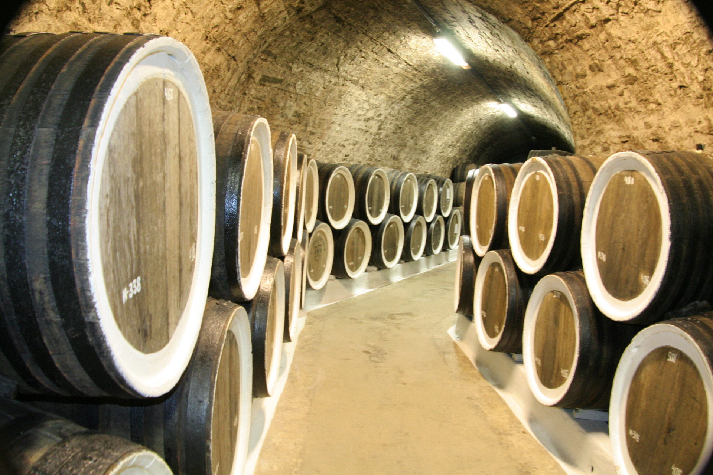

Сейчас в долине
VIСбор
vendemia
18+. Это информационная страница: вино на сайте не продаётся и не заказывается. Цены ниже — только за экскурсии и дегустации. Чрезмерное употребление алкоголя вредит вашему здоровью.
На винограднике
Под землёй
Сегодня
—
—
— светового дня
Из долины
Неделя
Восемь кругов
Что уже случалось в этой точке года
Каждый круг — один сезон, каждая точка — реальная запись из ленты новостей винодельни, поставленная на своё место в цикле. Видно то, чего не видно в ленте: сбор всегда начинается в августе, награды приходят осенью, а виноградник живёт в новостях в четыре раза реже, чем выставки.
2018
● — дата стоит в источнике. ○ — на сайте указан только год или месяц; положение точки на круге выведено из содержания записи и требует проверки у технолога. Всего в ленте разобрано 134 новости за 2015–2022 годы; к годовому циклу лозы прямо относятся 37 из них.

—
04 · Приехать на эту фазу
Визит в фазу сбора
В подвалах «Архадерессе» круглый год +14 °C, и семь программ работают одинаково в январе и в августе. Меняется другое — то, что происходит за стенами подвала. Ниже — программы, которые в текущей фазе показывают больше остальных.
Начало дегустаций 10 · 11 · 13 · 14 · 15 · 16 Вечерняя 20:00 по заявке В подвалах +14 °C Адрес с. Миндальное, ул. Миндальная, 8А